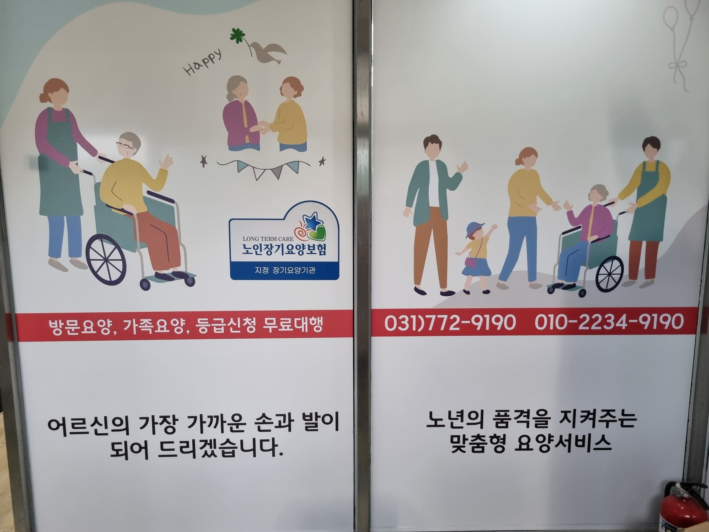
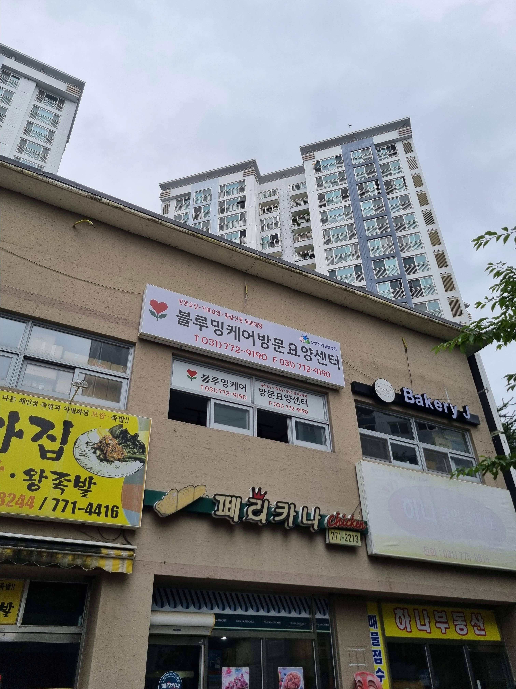
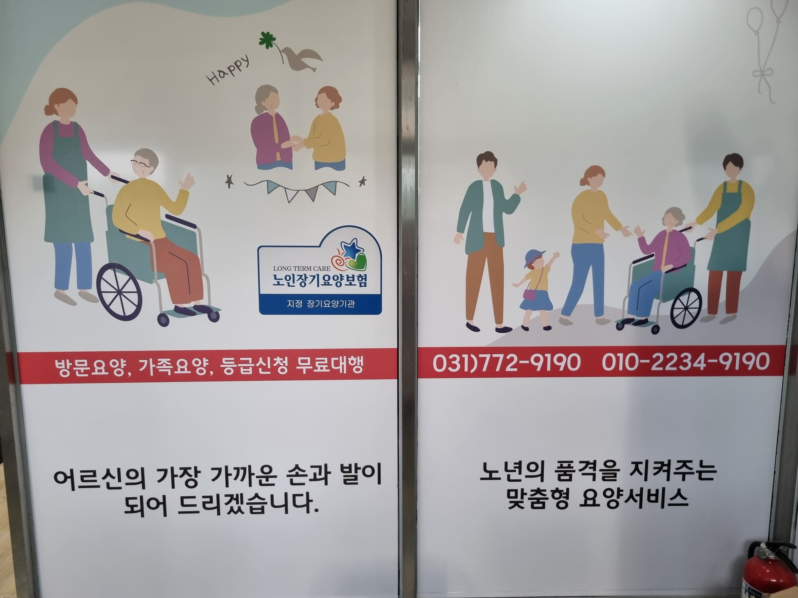
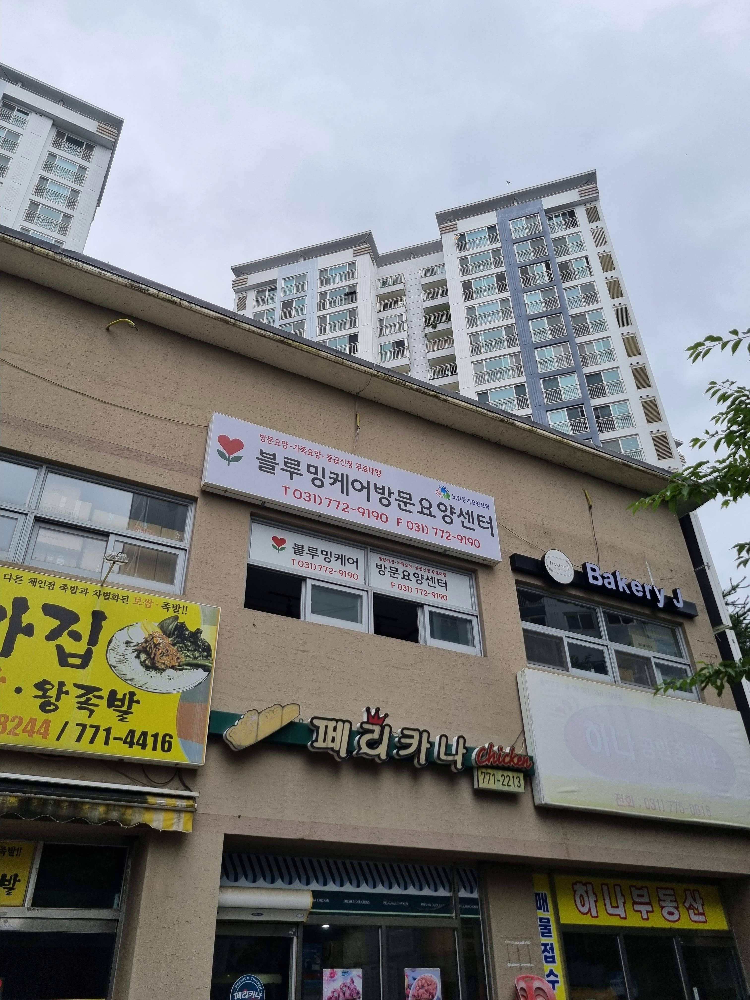

내 집에서 누리는
편안함,
전문가
의
따뜻한 돌봄
블루밍케어는 어르신의 행복한
일상과 가족의 든든한
평안을 위해 양평 지역
전문 요양보호사가 직접 찾아갑니다.
블루밍케어는
어떤
도움을
드리나요?
어르신의 행복한 노후와 가족의 평안을
위해
꼭 필요한 서비스를
제공합니다.
신체활동 및 가사지원
세면, 식사, 이동 도움 등 기본적인 일상생활은 물론, 어르신과
관련된 청소, 빨래, 장보기 등 가사 활동을 지원하여 쾌적한 환경을
만들어 드립니다.
인지활동 및 정서지원
치매 예방을 위한 인지 자극 활동부터 따뜻한 말벗이 되어드리는 것까지, 어르신의 마음에 활력과 안정을 찾아드립니다.
장기요양보험 상담
복잡하고 어려운 노인장기요양보험 등급 신청부터 이용 절차까지,
모든 과정을 친절하고 꼼꼼하게
안내해 드립니다.
양평 지역 전문가가
내 가족처럼
돌봅니다
블루밍케어는 수년간
양평 지역 어르신들을 돌봐온
노하우를
바탕으로,
어르신 개개인의 건강 상태와
생활 환경에 꼭 맞는 1:1 맞춤
케어 플랜을 제공합니다.
-
검증된 전문 요양보호사:
풍부한 경험과 따뜻한 마음을 가진 분들만 함께합니다. -
체계적인 맞춤 케어 시스템:
어르신별 맞춤 계획을 수립하고 정기적으로 관리합니다. -
가족과의 꾸준한 소통:
정기적인 상담을 통해 가족의 걱정을 덜어드립니다.
블루밍케어
방문요양센터
시설을 소개합니다
양평군 지역 어르신과 가족
모두가 안심할 수 있도록,
블루밍케어는 편안하고 믿을 수 있는
요양 환경을 준비했습니다.
 



자주 묻는 질문 (FAQ)
블루밍케어 방문요양 서비스에 대해
궁금한 점들을 모았습니다.
Q. 장기요양보험 등급 신청은 어떻게 하나요?
A. 국민건강보험공단에 신청 후, 공단 직원이 가정을 방문하여 상태를 평가합니다. 이후 심사를 거쳐 등급이 결정되며, 블루밍케어가 서류 준비와 절차 안내를 무료로 도와드립니다.
Q. 본인부담금은 얼마나 드나요?
A. 장기요양보험 적용 시 보통 전체 비용의 약 15%만 본인 부담하시면 됩니다. 기초생활수급자·차상위계층 등은 감경·감면 혜택도 받을 수 있습니다.
Q. 어떤 서비스를 받을 수 있나요?
A. 어르신의 상황에 맞추어 다음과 같은 서비스를 제공합니다.
- 일상생활 지원 (식사, 세면, 이동 도움 등)
- 가사지원 (청소, 빨래, 장보기 등)
- 인지활동 및 정서지원 (치매 예방 활동, 말벗 등)
Q. 서비스 시작까지 얼마나 걸리나요?
A. 상담 후 어르신의 건강 상태와 생활 환경을 초기 평가하고, 그에 맞는 요양보호사를 배정합니다. 보통 2~7일 이내 서비스를 시작할 수 있으며, 긴급 돌봄은 우선적으로 조정해 드립니다.
Q. 요양보호사 변경이 가능한가요?
A. 네, 가능합니다. 성향이나 일정이 맞지 않는 경우 언제든 말씀해 주시면 다른 요양보호사로 재배정해 드립니다.
Q. 이용 시간과 횟수는 어떻게 정하나요?
A. 장기요양등급과 점수에 따라 정해지는 급여 한도 내에서 요일·시간대를 자유롭게 설계할 수 있습니다. (예: 평일 오전 3시간, 주 5회 등)
Q. 서비스 가능 지역은 어디인가요?
A. 현재 양평군 전지역을 기본으로 운영하며, 인접 지역은 상담 시 가능 여부를 확인해드립니다.
Q. 치매 어르신도 이용할 수 있나요?
A. 가능합니다. 안전을 최우선으로 한 돌봄 루틴과 인지 자극 활동, 가족과의 긴밀한 소통을 포함해 맞춤형 케어를 진행합니다.
Q. 특별히 준비해야 할 것이 있나요?
A. 기본 위생·생활용품을 가정 내에 준비해 주시면 됩니다. 필요시 필수 물품 리스트를 안내해 드립니다.
Q. 상담은 어떻게 진행되나요?
A. 전화(031-772-9190) 또는 이메일을 통해 신청해 주시면, 무료 방문 상담을 통해 상태 평가와 서비스 방법, 비용 등을 상세히 안내해 드립니다.